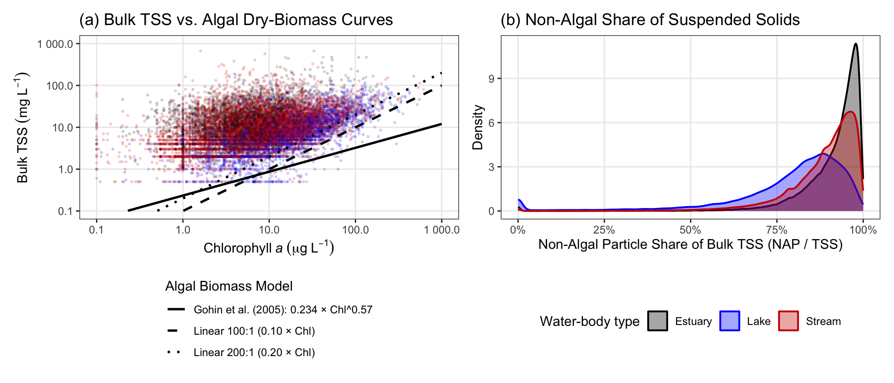

Section 3 Separating Non-Algal Particles (NAP) from Bulk TSS
Our additive Beer–Lambert model partitions non-water light attenuation among three mutually exclusive pools: phytoplankton (Chl a), non-algal suspended particles (NAP: mineral sediment and detritus), and dissolved organic matter (DOC). Because standard gravimetric filtration measures bulk Total Suspended Solids (TSS)—which captures both mineral sediment and living algal cells on the filter—we subtract living phytoplankton dry mass from bulk TSS before fitting the model:
| Optical Component | Field Measurement | Model Predictor & Units |
|---|---|---|
| Phytoplankton (\(\alpha_{\text{Chl }a}\,\text{Chl }a\)) | Chlorophyll a (\(\mu\text{g L}^{-1}\)) | \(\text{Chl }a\) (\(\text{mg m}^{-3} = \mu\text{g L}^{-1}\)) used directly |
| Non-algal particles (\(\alpha_{\text{NAP}}\,\text{NAP}\)) | Bulk TSS / SSC (\(\text{mg L}^{-1}\)) | \(\text{NAP} = \text{TSS} - \text{biomass}(\text{Chl }a)\) (\(\text{mg L}^{-1}\)) |
| Dissolved organic matter (\(\alpha_{\text{DOC}}\,\text{DOC}\)) | DOC (\(\text{mg L}^{-1}\)) | \(\text{DOC}\) (\(\text{mg L}^{-1}\)) used directly |
Following Gohin et al. (2005), we estimate phytoplankton dry biomass (\(\text{mg L}^{-1}\)) from \(\text{Chl }a\) (\(\mu\text{g L}^{-1}\)) as a power law that accounts for intracellular photoacclimation (lower carbon-to-chlorophyll ratios in nutrient-rich blooms; Geider et al. 1997; Cloern et al. 1995):
\[\text{biomass}_{\text{algal}}\ [\text{mg L}^{-1}] = 0.234\,(\text{Chl }a)^{0.57}, \qquad \text{NAP} = \text{TSS} - 0.234\,(\text{Chl }a)^{0.57}\]

Figure 3.1: (a) Empirical TSS vs. Chl a across matchups overlaid with the nonlinear Gohin et al. (2005) algal biomass curve (solid black) and constant linear dry-mass:Chl a ratios (dashed). Constant 100:1 or 200:1 lines cut above measured TSS during high-chlorophyll blooms, producing unphysical negative NAP. (b) Distribution of the non-algal fraction of bulk suspended solids (NAP / TSS) by water-body type.
3.1 Sensitivity to Biomass Formulation & Method Tiers
Comparing the Gohin et al. (2005) power law against constant linear dry-mass:Chl a ratios (50:1, 100:1, 200:1) shows that constant high ratios over-predict algal mass in blooms (generating up to 31.7% negative NAP), whereas the power law produces negative NAP in only 2.02% of samples while yielding virtually identical attenuation slopes:
| Algal Dry-Biomass Formulation (mg/L) | % Samples with NAP < 0 | α_NAP (m²/g) | α_DOC (m²/g) | α_Chl a (m²/mg) | Global R² |
|---|---|---|---|---|---|
| 0.05 × Chl (constant linear 50:1) | 0.7343 | 0.0431 | 0.0720 | 0.0095 | 0.4077 |
| 0.1 × Chl (constant linear 100:1) | 1.7079 | 0.0431 | 0.0720 | 0.0117 | 0.4077 |
| 0.2 × Chl (constant linear 200:1) | 6.0928 | 0.0431 | 0.0720 | 0.0160 | 0.4077 |
| 0.234 × Chl^0.57 (Gohin et al. 2005; canonical) | 1.3267 | 0.0432 | 0.0732 | 0.0086 | 0.4068 |
Similarly, restricting calibration strictly to top-tier analytical methods (Tier 1 chemistry and Tier 1–2 Secchi) yields nearly identical attenuation slopes while pooling all harmonized AquaMatch tiers nearly triples spatial coverage:
| Subset | Observations (n) | Unique Sites | α_NAP (m²/g) | α_DOC (m²/g) | α_Chl a (m²/mg) |
|---|---|---|---|---|---|
| All harmonized AquaMatch tiers (canonical training set) | 277,382 | 22,567 | 0.0432 | 0.0732 | 0.0086 |
| Strict top analytical tiers only (Tier 1 chemistry, Tier 1–2 Secchi) | 46,824 | 10,318 | 0.0353 | 0.0809 | 0.0077 |